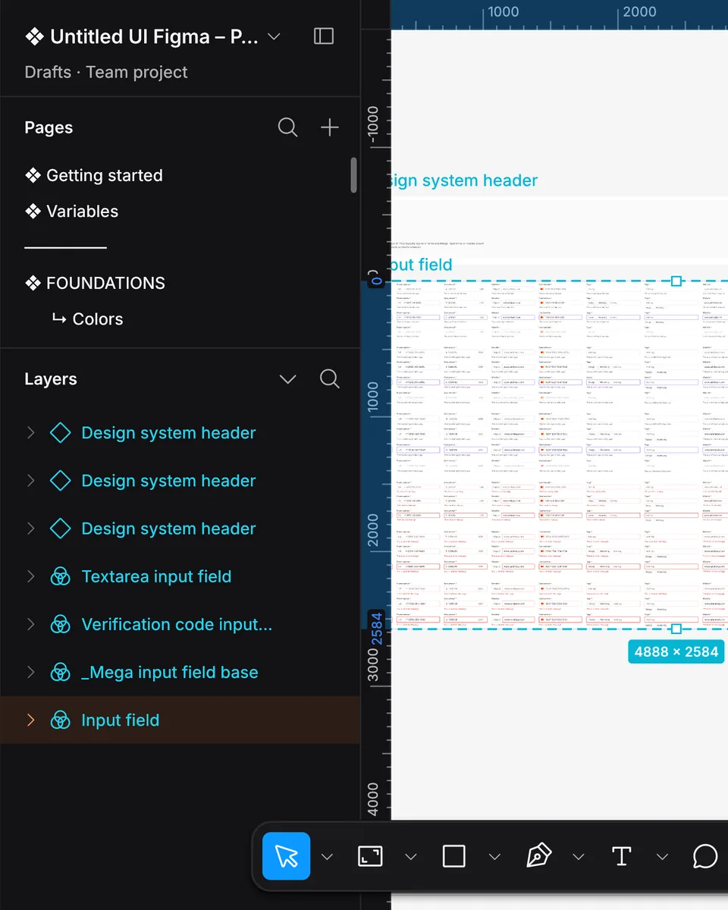
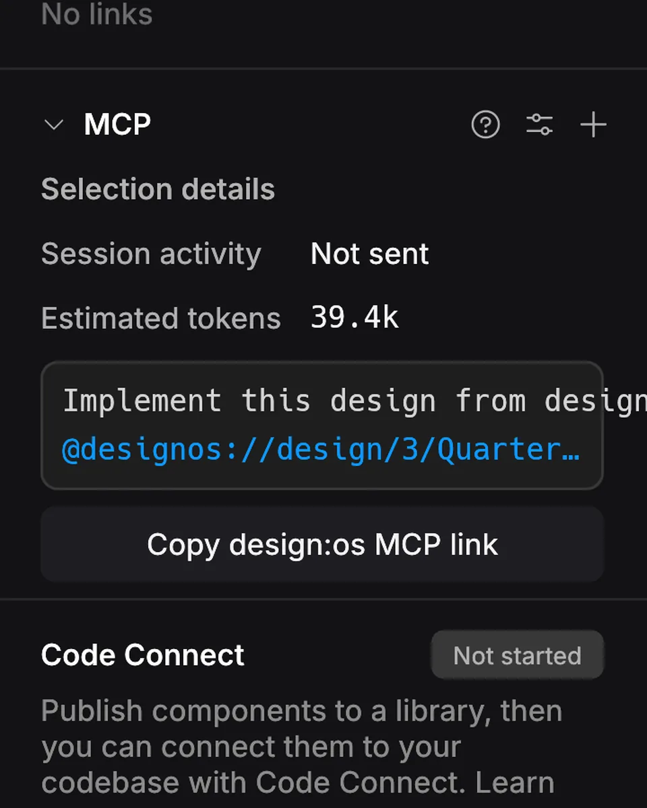
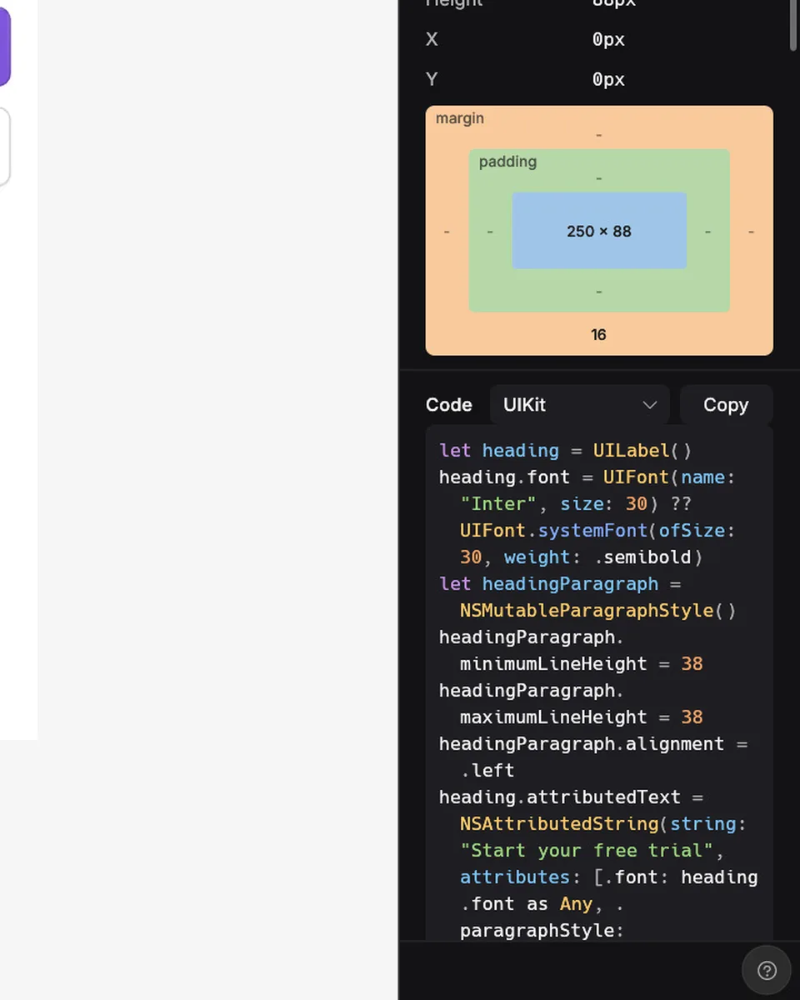
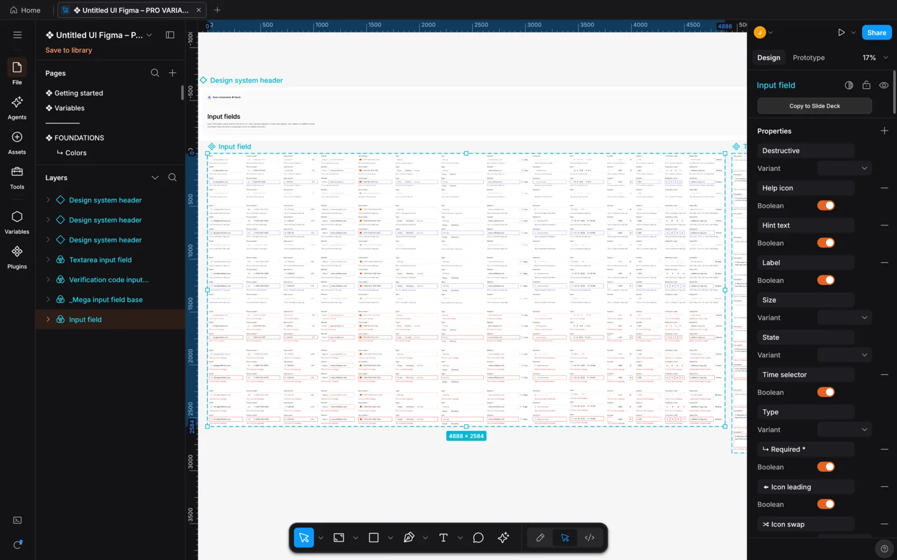
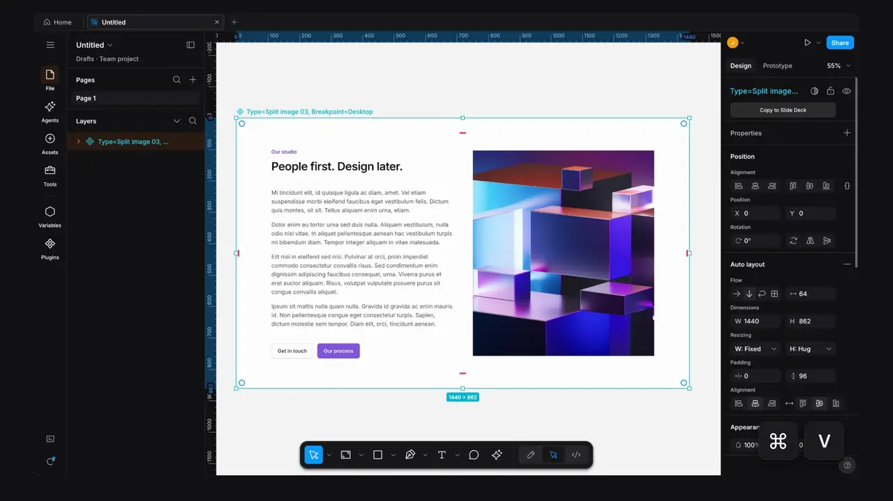
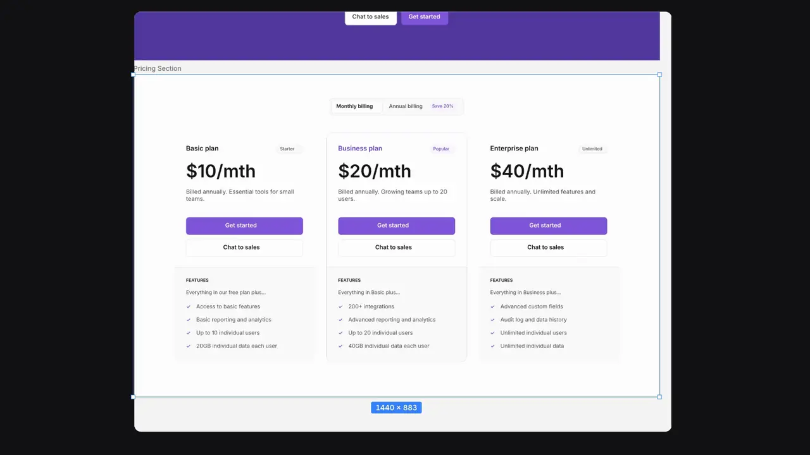
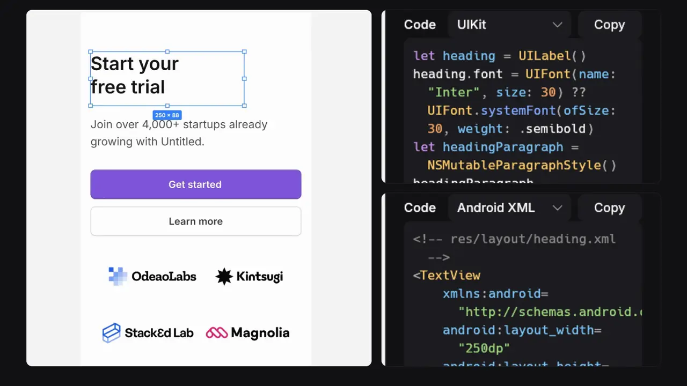
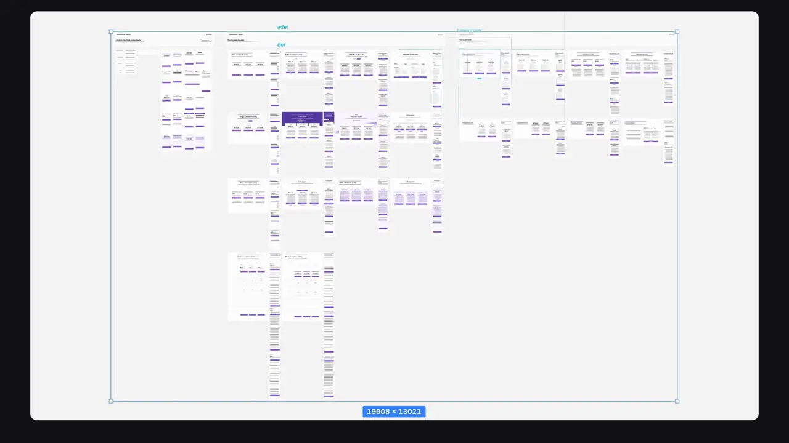
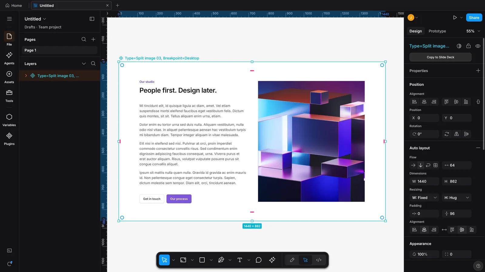

208,610
nodes in one file
The Untitled UI PRO v8.0 Figma kit opens and renders on the GPU, across 113 pages.

Open Figma files, paste from Figma desktop, and let a coding agent build on the same canvas.
Windows · Linux · all downloads
Each card states one fact. Its back is a real capture from Studio.
208,610
nodes in one file
The Untitled UI PRO v8.0 Figma kit opens and renders on the GPU, across 113 pages.

22
MCP tools
Coding agents edit the document you have open through designos-mcp. Built-in presets: Claude Code, Codex and Antigravity.

7
code targets
Dev Mode prints CSS, Tailwind, SwiftUI, UIKit, Compose, Android XML and React.

Studio opens your .fig file in a native window. The canvas draws it on the GPU, the Layers panel and the inspector edit it, and the Agents rail lets a coding agent work on it with you.

01 Figma
.fig files. Open a Figma file, edit it, save it back..fig file brings its effect and grid styles with it.
02 Agents
designos-mcp. Built-in presets for Claude Code, Codex and Antigravity.
03 Code

208,610 nodes on 113 pages
That is the Untitled UI PRO v8.0 Figma kit. The canvas draws it on the GPU through wgpu.
Large pages render at low zoom, and after a quarter second without changes the canvas draws one full-quality frame.

Real renders from Studio 0.3.0, on frames from the Untitled UI kit.
Copy layers in Figma desktop and press Cmd+V. They land centered in the view, images included, as one undo step.
Full-size renderAgent edits replay as node operations into the document you have open, and wait while you drag.
Full-size renderA .fig file brings its effect and grid styles with it.
Full-size renderChange a style once and every layer that uses it updates, in one undo step.
Full-size renderAuto layout adds Space around and Space evenly, and wrapped lines can spread.
Full-size renderBalance evens out the lines of a wrapping heading.
Full-size renderDev Mode now prints UIKit and Android XML, with variables in their code syntax. Shown: Android XML.
Full-size render
Also new: multi-page PDF export, opacity bound to number variables, Text wrap Pretty, and files with broken numbers open again.
Read the full changelogVerified on macOS; Windows and Linux are tested by users. On a Mac, the first launch needs Open Anyway once. All downloads and checksums
/plugin marketplace add jangtrinh/design-os-studio
/plugin install design-os-studio@design-os-studiogit clone https://github.com/jangtrinh/design-os-studio /tmp/design-os-studio
mkdir -p ~/.codex/skills/design-os-studio ~/.codex/prompts
cp -R /tmp/design-os-studio/skills/design-os-studio/* ~/.codex/skills/design-os-studio/
cp /tmp/design-os-studio/prompts/doctor.md ~/.codex/prompts/design-os-studio-doctor.md
rm -rf /tmp/design-os-studiogit clone https://github.com/jangtrinh/design-os-studio /tmp/design-os-studio
mkdir -p ~/.gemini/skills/design-os-studio
cp -R /tmp/design-os-studio/skills/design-os-studio/* ~/.gemini/skills/design-os-studio/
rm -rf /tmp/design-os-studioA native desktop design editor written in Rust. It draws on the GPU with wgpu, opens and saves Figma .fig files, and bundles a local server so coding agents can edit the open document.
Yes. Studio opens and saves .fig files. You can also copy layers in Figma desktop and paste them onto the Studio canvas with Cmd+V. They land centered in the view as one undo step, images included.
Studio bundles designos-mcp, a local MCP server with 22 tools. Studio has built-in presets for Claude Code, Codex and Antigravity. Agent edits replay into your open document, wait while you drag, and each one is its own undo step.
macOS, Windows and Linux. Releases are verified on macOS; Windows and Linux builds are tested by users. On a Mac, the first launch needs Open Anyway once.
MIT or Apache-2.0, your choice. The source is on GitHub.
Free and open source. macOS, Windows and Linux.